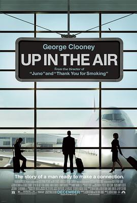

在云端 / Up in the Air
又名：寡佬飞行日记(港) / 型男飞行日志(台) / 直上云霄 / 悬而未决 / 空中飞人 / 在空中 / 八字没一撇(豆友译名)
作品信息
| 导演 | 贾森·雷特曼 |
| 编剧 | 贾森·雷特曼 / 谢尔顿·特纳 / 沃尔特·基恩 |
| 主演 | 乔治·克鲁尼 / 安娜·肯德里克 / 维拉·法米加 / 杰森·贝特曼 / 艾米·莫顿 / 梅兰妮·林斯基 / J·K·西蒙斯 / 山姆·埃利奥特 / 丹尼·麦克布莱德 / 扎克·加利凡纳基斯 / 克里斯·劳威尔 / 史蒂夫·艾斯汀 / 马文·扬 / 米根·弗林 / 达斯汀·迈尔斯 / 塔玛拉·特恩特 / 马特·奥图尔 / 阿德希尔·卡尔安 / 杰夫·维特兹克 / 戴夫·恩格弗 / 保罗·戈茨 / 亚当·罗斯 |
| 类型 | 剧情 / 喜剧 / 爱情 |
| 制片国家/地区 | 美国 |
| 语言 | 英语 |
| 上映日期 | 2009-09-05(特柳赖德电影节) / 2009-12-23(美国) |
| 片长 | 109分钟 |
| IMDb | tt1193138 |
最后一次看到是 2026-08-12T21:13:18+08:00 · 豆瓣原页